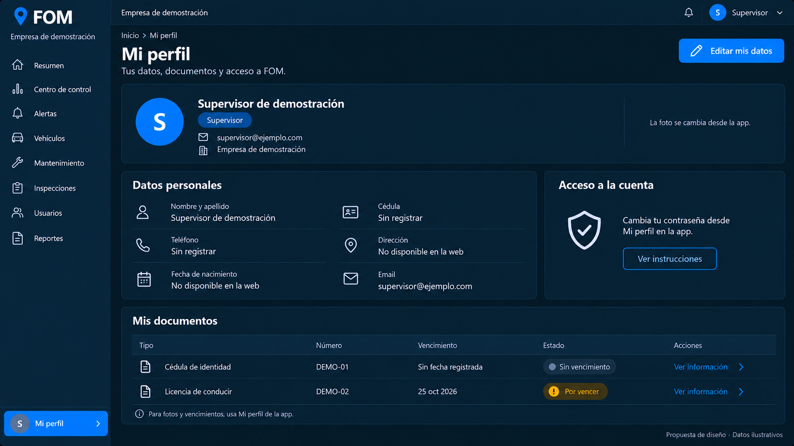
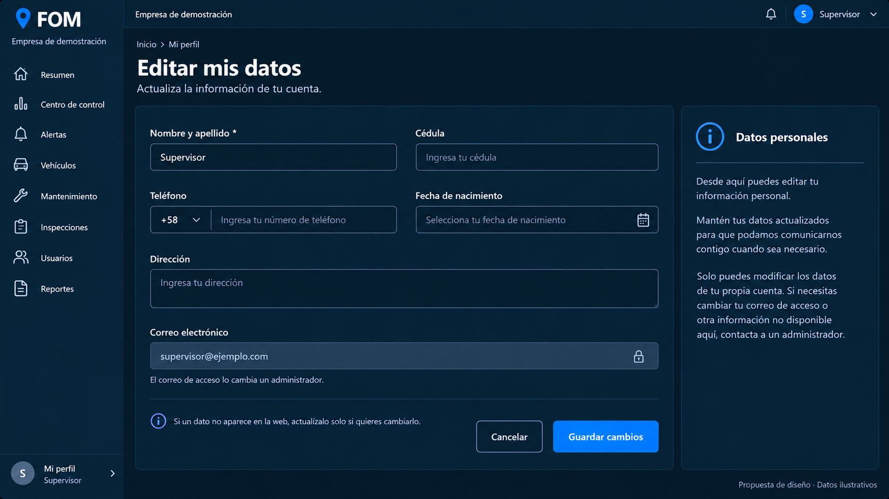
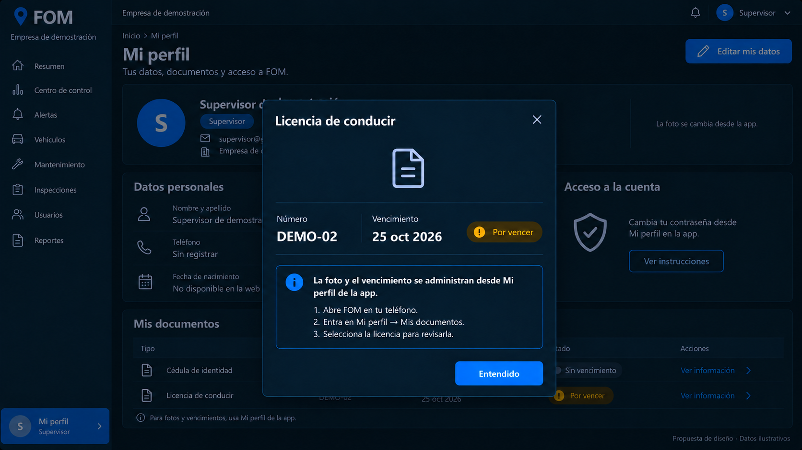
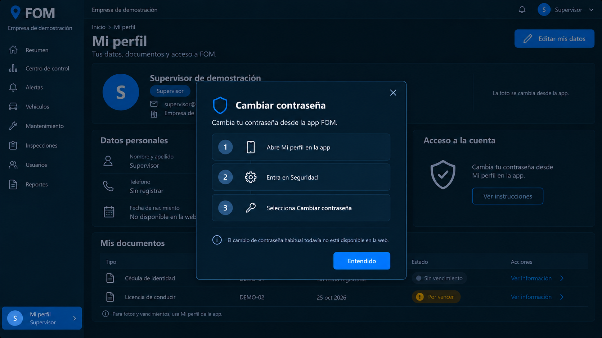
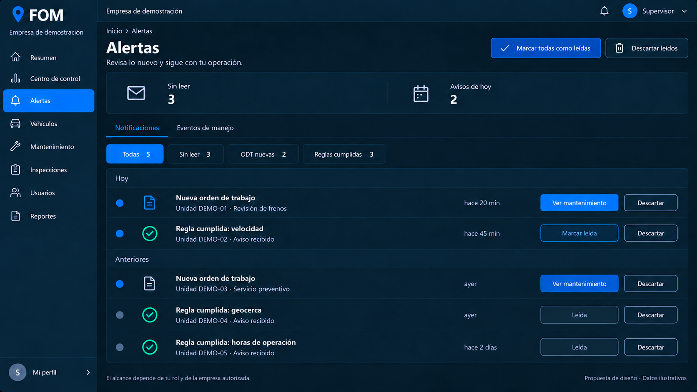
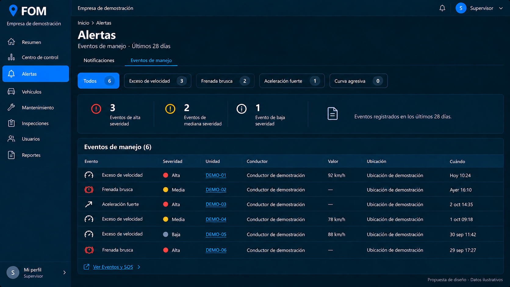
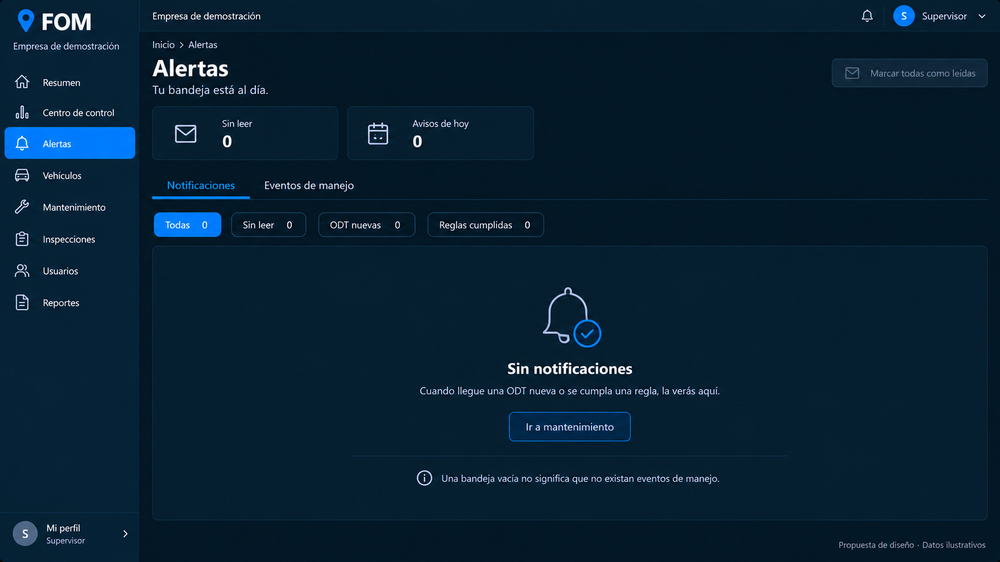

Mi perfil
Identidad, datos personales y documentos con acciones claras.

Editar mis datos
Formulario para actualizar los datos propios; el correo permanece de solo lectura.

Información del documento
Ventana de información del documento y acceso a su gestión desde la app.

Seguridad de la cuenta
Instrucciones para cambiar la contraseña desde la app.

Bandeja de alertas
Avisos agrupados por fecha y estado de lectura, con acceso a mantenimiento.

Eventos de manejo
Eventos de los últimos 28 días, severidad y vínculos a unidades.

Bandeja al día
Estado vacío con contexto; cero notificaciones no equivale a cero eventos.
